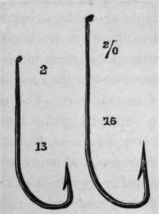
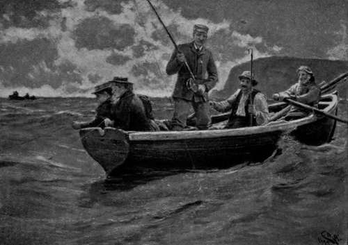

Sea Fishing From Small Boats. Part 11
Description
This section is from the book "Sea Fishing", by John Bickerdyke. Also available from Amazon: Sea Fishing.
Sea Fishing From Small Boats. Part 11
1 A trace thus constructed is unsuitable for casting out. For that purpose the lead must be at the most four feet from the bait. —J. B.
With pollack, on the other hand, very strong, sound tackle is absolutely necessary ; for these fish are enormously strong, and their first rush, which must be checked, is, as I have pointed out, always downwards towards their haven of refuge among rocks and seaweed. Once they reach a point of vantage, there is no dislodging them, and the tackle has to be broken. Only once in my life have I ever succeeded in catching a pollack which had reached the bottom. It was a large fish of six or seven pounds, if I remember rightly, and having some doubt about the strength of my trace, I did not hold him very firmly, and so he weeded me. There he stuck, and, though with a long sweep we were able to reach the bottom and poke about among the rocks and seaweed, there seemed no chance of moving him. The old plan of checking a runaway salmon by suddenly giving him a slack line occurred to me. The theory, of course, is that the fish, imagining he is free, stops in his course, and may even head in the other direction. I determined to try this delusion on my pollack. Holding a few yards of slack ready in my right hand, I pulled as heavily on the line with my left as it would bear, then suddenly released it and threw the slack overboard. Then I sat still, and patiently waited developments. Presently I saw the line going away from me at an angle with the boat, and just as it was about to tighten I seized it and hauled up the fish. I have been careful since to let a pollack break me rather than allow him to reach the seaweed, so have never had occasion to repeat the experiment. The incident happened during one capital day's lythe fishing I had on the north-west coast of Scotland, a few miles south of Scourie. I should add in this connection that there are pollack grounds where piscine havens of refuge are wanting, and the fish can be played in the ordinary way.
There is pollack fishing and pollack fishing. In the spring, for instance, quantities of baby fish are caught half a dozen at a time on the Devon and Cornish coasts, and these, of course, only require fine tackle. It is usual to have a spinner on the end of the line, and four or five, or even more, white flies or those peculiar local baits, Belgian grubs (illustrated on p. 139), between the lead and the end of the trace. There are not many parts of this coast where very large pollack are commonly caught, but it was off Cornwall that Lord St. Levan caught the specimen pollack already recorded.
Good salmon gut double, or lightly twisted, is, generally speaking, strong enough for pollack up to twelve pounds ; but for fish above that weight—which I again repeat must, as a rule, be held, and cannot by any possibility be played, at least over rocks and seaweed—I would prefer something still stronger, such as treble gut or stout gimp. The running line, of course, must be proportionately strong.
Under the headings ' Pollack,' ' Artificial Baits,' and ' Natural Baits' I have dealt more at length with this branch of sea fishing, and the remarks on bass and mackerel in the pages devoted to those fish should also be carefully noted.
Harling in the tidal reaches of a river for bass or other fish may be carried on almost exactly as it is done in Scotland and Ireland in fresh water. It has the great advantage of presenting the bait to the fish before the boat has passed over them, and with such shy creatures as bass this is a point of considerable importance. It is, in fact, very similar to the drift-line fishing already described, only instead of being at anchor the boat is slowly rowed across the current which carries out the line to a considerable distance. At each turn fresh water is covered, and sooner or later the fish will be met with. Either the drift-line tackle or the trailing or railing tackle already described answers very well for this purpose, and live baits are far better than those which are artificial or dead. Large mud or rag worms and live sand-eels are among the best that can be used. This plan can be followed in any tideway, not necessarily in estuaries. For instance, in channels between large islands and the shore there are often very strong tidal currents in which are found bass and pollack, and these places can be easily harled.
If, when harling, a large shoal of fish is met with, it is sometimes desirable to let down the anchor or stone, and try for them with the drift lines, using live baits ; but often it will be found that more fish will be taken by harling than by remaining stationary in one spot. The drift-line harling with live baits, described in the previous paragraph, is particularly deadly.
Of course there is nothing to prevent the sea angler casting a spinning or other bait from a boat, either off the reel or in Thames fashion, after the manner described in the chapter on Fishing from Piers, Headlands, etc, p. 190, etc. In special cases where harling is out of the question, and the fish cannot be covered by railing, or where it would be undesirable to row a boat over or near them, this plan is the best that can be followed.
Heavily leaded float tackle can be cast out in exactly the same manner—just as a freshwater fisherman will cast out a live-bait tackle for pike. I have dealt with the method exhaustively in the chapter already mentioned.
There is a method of whiting fishing, carried on while the boat is in motion, which I have seen practised with success at Ilfracombe and other places. It is only suitable for fishing grounds where the bottom is not very foul, and the fish are abundant and widely distributed. Either paternoster tackle or ordinary hand lines are used. The boat is allowed to drift up or down channel with the tide and back again. Fairly light leads can be used, as there is no pressure of water on the lines unless an adverse wind checks the boat. By these means fishing grounds can be worked over which, owing to the fierceness of the tidal current, no small boat could be moored, or where the bait could not be kept near the bottom with leads of reasonable weight so long as the boat was at anchor.
HARLING WITH DRIFT LINES.
Continue to:
- prev: Sea Fishing From Small Boats. Part 10
- Table of Contents
- next: Sea Fishing From Small Boats. Part 12
Tags
fishing, hooks, bait, fishermen, spanish mackerel, mackerel fishing